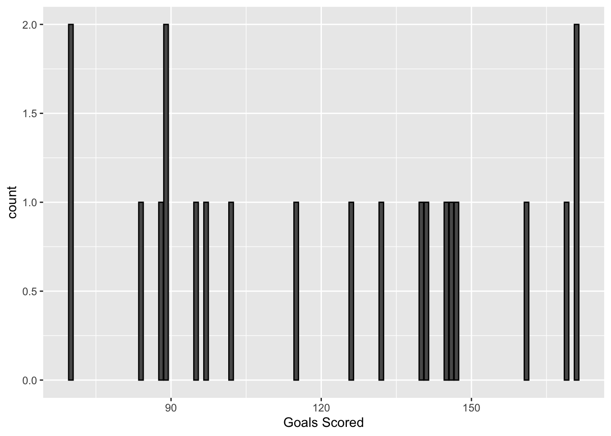

elections_small <- elections |>select(state_name, county_name, total_votes_20, repub_pct_20, dem_pct_20, total_votes_16, dem_pct_16)# Check out the first 6 rows to confirm your code did what you think it did!head(elections_small)
Whereas select() selects certain variables or columns, filter() keeps certain units of observation or rows relative to their outcome on certain variables. To this end, we must:
Identify the variable(s) that are relevant to the filter.
Use a “logical comparison operator” to define which values of the variable to keep:
symbol
meaning
==
equal to
!=
not equal to
>
greater than
>=
greater than or equal to
<
less than
<=
less than or equal to
%in% c(???, ???)
a list of multiple values
Use quotes "" when specifying outcomes of interest for a categorical variable.
Commenting/Uncommenting Code
To comment/uncomment several lines of code at once, highlight them then click ctrl/cmd+shift+c.
# Keep only data on counties in Hawaii elections_small |>filter(state_name %in%c("Hawaii"))
state_name county_name total_votes_20 repub_pct_20 dem_pct_20
1 Hawaii Hawaii County 87814 30.63 66.88
2 Hawaii Honolulu County 382114 35.66 62.51
3 Hawaii Kauai County 33497 34.58 63.36
4 Hawaii Maui County 71044 31.14 66.59
total_votes_16 dem_pct_16
1 64865 63.61
2 285683 61.48
3 26335 62.49
4 51942 64.45
# What does this do? elections_small |>filter(state_name %in%c("Hawaii", "Delaware"))
state_name county_name total_votes_20 repub_pct_20 dem_pct_20
1 Delaware Kent County 87025 47.12 51.19
2 Delaware New Castle County 287633 30.72 67.81
3 Delaware Sussex County 129352 55.07 43.82
4 Hawaii Hawaii County 87814 30.63 66.88
5 Hawaii Honolulu County 382114 35.66 62.51
6 Hawaii Kauai County 33497 34.58 63.36
7 Hawaii Maui County 71044 31.14 66.59
total_votes_16 dem_pct_16
1 74253 44.91
2 261468 62.30
3 105814 37.17
4 64865 63.61
5 285683 61.48
6 26335 62.49
7 51942 64.45
Data for Hawaii and Delaware.
# Keep only data on counties where the Republican got MORE THAN 93.97% of the vote in 2020# THINK: What variable is relevant here?elections_small |>filter(repub_pct_20 >93.97)
state_name county_name total_votes_20 repub_pct_20 dem_pct_20
1 Texas Borden County 416 95.43 3.85
2 Texas King County 159 94.97 5.03
3 Texas Roberts County 550 96.18 3.09
total_votes_16 dem_pct_16
1 365 8.49
2 159 3.14
3 550 3.64
# Keep only data on counties where the Republican got AT LEAST 93.97% of the vote in 2020# This should have 1 more row (observation) than your answer aboveelections_small |>filter(repub_pct_20 >=93.97)
state_name county_name total_votes_20 repub_pct_20 dem_pct_20
1 Montana Garfield County 813 93.97 5.04
2 Texas Borden County 416 95.43 3.85
3 Texas King County 159 94.97 5.03
4 Texas Roberts County 550 96.18 3.09
total_votes_16 dem_pct_16
1 715 4.76
2 365 8.49
3 159 3.14
4 550 3.64
We can also filter with respect to 2 rules! Here, think what variables are relevant.
# Keep only data on counties in Texas where the Democrat got more than 65% of the vote in 2020# Do this 2 ways.# Method 1: 2 filters with 1 condition eachelections_small |>filter(state_name %in%c("Texas")) |>filter(dem_pct_20 >65)
state_name county_name total_votes_20 repub_pct_20 dem_pct_20
1 Texas El Paso County 267215 31.56 66.66
2 Texas Presidio County 2217 32.52 65.99
3 Texas Travis County 610349 26.43 71.41
4 Texas Zavala County 4379 34.03 65.40
total_votes_16 dem_pct_16
1 210458 69.14
2 2203 66.18
3 462511 66.26
4 3390 77.67
state_name county_name total_votes_20 repub_pct_20 dem_pct_20
1 Texas El Paso County 267215 31.56 66.66
2 Texas Presidio County 2217 32.52 65.99
3 Texas Travis County 610349 26.43 71.41
4 Texas Zavala County 4379 34.03 65.40
total_votes_16 dem_pct_16
1 210458 69.14
2 2203 66.18
3 462511 66.26
4 3390 77.67
Exercise 3: arrange Demo
arrange() arranges or sorts the rows in a dataset according to a given column or variable, in ascending or descending order:
arrange(variable), arrange(desc(variable))
# Arrange the counties in elections_small from lowest to highest percentage of 2020 Republican support# Print out just the first 6 rows elections_small |>arrange(repub_pct_20) |>head()
state_name county_name total_votes_20 repub_pct_20
1 District of Columbia District of Columbia 344356 5.40
2 Maryland Prince George's County 424855 8.73
3 Maryland Baltimore city 237461 10.69
4 Virginia Petersburg city 14118 11.22
5 New York New York County 694904 12.26
6 California San Francisco County 443458 12.72
dem_pct_20 total_votes_16 dem_pct_16
1 92.15 280272 92.85
2 89.26 351091 89.33
3 87.28 208980 85.44
4 87.75 13717 87.52
5 86.78 591368 87.17
6 85.27 365295 85.53
# Arrange the counties in elections_small from highest to lowest percentage of 2020 Republican support# Print out just the first 6 rows elections_small |>arrange(desc(repub_pct_20))|>head()
state_name county_name total_votes_20 repub_pct_20 dem_pct_20
1 Texas Roberts County 550 96.18 3.09
2 Texas Borden County 416 95.43 3.85
3 Texas King County 159 94.97 5.03
4 Montana Garfield County 813 93.97 5.04
5 Texas Glasscock County 653 93.57 5.97
6 Nebraska Grant County 402 93.28 4.98
total_votes_16 dem_pct_16
1 550 3.64
2 365 8.49
3 159 3.14
4 715 4.76
5 602 5.65
6 394 5.08
Exercise 4: mutate Demo
mutate() can either transform / mutate an existing variable (column), or define a new variable based on existing ones.
Part a
# What did this code do?#It created a new column called diff_20 that was the repub_pct_20 (-) the dem_pct_20. It shows the difference between the columns. elections_small |>mutate(diff_20 = repub_pct_20 - dem_pct_20) |>head()
# What did this code do?# It created a nuew column called repub_votes_20 that rounded the number of total votes in 2020 multiplied by the republican percent. elections_small |>mutate(repub_votes_20 =round(total_votes_20 * repub_pct_20/100)) |>head()
# What did this code do?# Created a new column called repub_win_20 that showed when teh republican percent was greater than democrat percent meaning that rebuplicans won. elections_small |>mutate(repub_win_20 = repub_pct_20 > dem_pct_20) |>head()
# You try# Define a variable that calculates the change in Dem support in 2020 vs 2016elections_small |>mutate(change_dem_pct = dem_pct_20 - dem_pct_16) |>head()
# You try# Define a variable that determines whether the Dem support was higher in 2020 than in 2016 (TRUE/FALSE)elections_small |>mutate(dem_pct_higher = dem_pct_20 > dem_pct_16) |>head()
BEFORE running the below chunk, what do you think it will produce?
I think it will show the results from Wisconsin in 2020 in what county the democratic votes are greater than the republican. The order will be in counties with the greatest number of total votes to the least.
state_name county_name total_votes_20 repub_pct_20 dem_pct_20
1 Wisconsin Milwaukee County 458971 29.27 69.13
2 Wisconsin Dane County 344791 22.85 75.46
3 Wisconsin Rock County 85360 43.51 54.66
4 Wisconsin La Crosse County 67884 42.25 55.75
5 Wisconsin Eau Claire County 58275 43.49 54.26
6 Wisconsin Portage County 40603 47.53 50.31
total_votes_16 dem_pct_16
1 434970 66.44
2 304729 71.38
3 75043 52.42
4 62785 51.61
5 54080 50.43
6 38123 48.59
Part b
Think then Run
BEFORE trying, what do you think will happen if you change the order of filter and arrange:
the results will be the same
# Now try it. Change the order of filter and arrange below. elections_small |>filter(repub_pct_20 < dem_pct_20,state_name =="Wisconsin") |>arrange(desc(total_votes_20)) |>head()
state_name county_name total_votes_20 repub_pct_20 dem_pct_20
1 Wisconsin Milwaukee County 458971 29.27 69.13
2 Wisconsin Dane County 344791 22.85 75.46
3 Wisconsin Rock County 85360 43.51 54.66
4 Wisconsin La Crosse County 67884 42.25 55.75
5 Wisconsin Eau Claire County 58275 43.49 54.26
6 Wisconsin Portage County 40603 47.53 50.31
total_votes_16 dem_pct_16
1 434970 66.44
2 304729 71.38
3 75043 52.42
4 62785 51.61
5 54080 50.43
6 38123 48.59
Part c
So the order of filter() and arrange() did not matter – rerranging them produces the same results. BUT what is one advantage of filtering before arranging?’ When reading back the code we can see which variables were being looked at before they we arranged.
Part d
Think then Run
BEFORE running the below chunk, what do you think it will produce?
I think it was show the results from Delaware if the republican candidate won in 2020 along with the overall republican and democratic values.
county_name repub_pct_20 dem_pct_20 repub_win_20
1 Kent County 47.12 51.19 FALSE
2 New Castle County 30.72 67.81 FALSE
3 Sussex County 55.07 43.82 TRUE
Part e
Think then Run
BEFORE trying, what do you think will happen if you change the order of mutate and select:
we’ll get an error
# Now try it. Change the order of mutate and select below.#elections_small |> # filter(state_name == "Delaware") |> #select(county_name, repub_pct_20, dem_pct_20, repub_win_20) |>#mutate(repub_win_20 = repub_pct_20 > dem_pct_20)
Exercise 6: DIY Pipe Series
We’ve now learned 4 of the 6 wrangling verbs: select, filter, mutate, arrange. Let’s practice combining these into pipe series. Here are some hot tips:
Before writing any code, translate the prompt: how many distinct wrangling steps are needed and what verb do we need in each step?
Add each verb one at a time – don’t try writing a whole chunk at once.
Part a
Show just the counties in Minnesota and their Democratic 2020 vote percentage, from highest to lowest. Your answer should have just 2 columns.
county_name dem_pct_20
1 Ramsey County 71.50
2 Hennepin County 70.46
3 Cook County 65.58
4 St. Louis County 56.64
5 Dakota County 55.73
6 Olmsted County 54.16
7 Washington County 53.46
8 Blue Earth County 50.84
9 Clay County 50.74
10 Lake County 50.64
11 Nicollet County 50.31
12 Carlton County 49.58
13 Winona County 49.07
14 Rice County 48.76
15 Mahnomen County 48.26
16 Anoka County 47.79
17 Beltrami County 47.24
18 Carver County 46.37
19 Mower County 46.00
20 Scott County 45.52
21 Houston County 42.42
22 Goodhue County 41.23
23 Freeborn County 40.96
24 Norman County 40.80
25 Itasca County 40.61
26 Koochiching County 38.41
27 Watonwan County 38.20
28 Kittson County 38.12
29 Stevens County 37.80
30 Stearns County 37.58
31 Fillmore County 37.48
32 Steele County 37.47
33 Kandiyohi County 36.12
34 Aitkin County 35.98
35 Lyon County 35.94
36 Lac qui Parle County 35.79
37 Wabasha County 35.78
38 Grant County 35.58
39 Traverse County 35.46
40 Big Stone County 35.41
41 Pennington County 35.29
42 Pope County 35.27
43 Polk County 34.88
44 Cass County 34.68
45 Wright County 34.49
46 Hubbard County 34.42
47 Swift County 34.35
48 Crow Wing County 34.17
49 Chisago County 34.15
50 Becker County 33.96
51 Pine County 33.87
52 Le Sueur County 33.73
53 Chippewa County 33.67
54 Nobles County 33.65
55 Waseca County 33.65
56 Dodge County 33.47
57 Otter Tail County 32.85
58 Benton County 32.70
59 Douglas County 32.56
60 Brown County 32.48
61 Sherburne County 32.48
62 Faribault County 31.98
63 Red Lake County 31.47
64 Renville County 30.71
65 McLeod County 30.64
66 Yellow Medicine County 30.54
67 Lincoln County 30.08
68 Cottonwood County 30.03
69 Kanabec County 30.02
70 Martin County 30.02
71 Jackson County 29.99
72 Mille Lacs County 29.98
73 Wilkin County 29.91
74 Rock County 29.69
75 Murray County 29.60
76 Isanti County 29.45
77 Sibley County 28.60
78 Meeker County 28.58
79 Redwood County 28.43
80 Lake of the Woods County 27.87
81 Clearwater County 26.76
82 Pipestone County 26.44
83 Wadena County 26.35
84 Roseau County 25.98
85 Marshall County 25.33
86 Todd County 24.79
87 Morrison County 22.33
Part b
Create a new dataset named mn_wi that sorts the counties in Minnesota and Wisconsin from lowest to highest in terms of the change in Democratic vote percentage in 2020 vs 2016. This dataset should include the following variables (and only these variables): state_name, county_name, dem_pct_20, dem_pct_20, and a variable measuring the change in Democratic vote percentage in 2020 vs 2016.
# Define the dataset# Only store the results once you're confident that they're correct mn_wi <- elections |>filter(state_name %in%c("Wisconsin", "Minnesota")) |>mutate(diff_dem = dem_pct_20 - dem_pct_16) |>select(state_name, county_name, diff_dem, dem_pct_20, dem_pct_16) |>arrange(diff_dem)# Check out the first 6 rows to confirm your resultshead(mn_wi)
state_name county_name diff_dem dem_pct_20 dem_pct_16
1 Minnesota Stevens County -1.75 37.80 39.55
2 Wisconsin Forest County -1.06 34.06 35.12
3 Wisconsin Kewaunee County -0.86 32.87 33.73
4 Wisconsin Clark County -0.82 30.37 31.19
5 Wisconsin Adams County -0.77 36.63 37.40
6 Wisconsin Trempealeau County -0.71 40.86 41.57
Part c
Construct and discuss a plot of the county-level change in Democratic vote percent in 2020 vs 2016, and how this differs between Minnesota and Wisconsin.
Let’s talk about the last 2 verbs. summarize() (or equivalently summarise()) takes an entire data frame as input and outputs a single row with one or more summary statistics. For each chunk below, indicate what the code does.
# What does this do?# Shows the summary of the repub_pct_2 column. elections_small |>summarize(median(repub_pct_20))
median(repub_pct_20)
1 68.29
# What does this do?# Summarizes the median of the values in repub_pct_20. elections_small |>summarize(median_repub =median(repub_pct_20))
median_repub
1 68.29
# What does this do? elections_small |>summarize(median_repub =median(repub_pct_20), total_votes =sum(total_votes_20))
median_repub total_votes
1 68.29 157949293
Exercise 8: summarize + group_by demo
Finally, group_by() groups the units of observation or rows of a data frame by a specified set of variables. Alone, this function doesn’t change the appearance of our dataset or seem to do anything at all:
Though it does change the underlying structure of the dataset:
# Check out the structure before and after group_by elections_small |>class()
[1] "data.frame"
elections_small |>group_by(state_name) |>class()
[1] "grouped_df" "tbl_df" "tbl" "data.frame"
Where it really shines is in partnership with summarize().
# What does this do?# (What if we didn't use group_by?)# It summarizes the median of republican percent in 2020 but shows all the values per state. Without the group_by it groups everything together and there is not a separation of states. elections_small |>group_by(state_name) |>summarize(median_repub =median(repub_pct_20), total_votes =sum(total_votes_20))
# A tibble: 50 × 3
state_name median_repub total_votes
<chr> <dbl> <int>
1 Alabama 70.6 2323304
2 Arizona 57.9 3387326
3 Arkansas 72.1 1219069
4 California 44.8 17495906
5 Colorado 56.2 3256953
6 Connecticut 41.0 1824280
7 Delaware 47.1 504010
8 District of Columbia 5.4 344356
9 Florida 64.6 11067456
10 Georgia 68 4997716
# ℹ 40 more rows
Reflect
Notice that group_by() with summarize() produces new data frame or tibble! But the units of observation are now states instead of counties within states.
Before writing any code, translate the given prompts: how many distinct wrangling steps are needed and what verb do we need in each step?
Add each verb one at a time.
Part a
NOTE: Part a is a challenge exercise. If you get really stuck, move on to Part b which is the same overall question, but with hints.
# Sort the *states* from the most to least total votes cast in 2020elections_small |>group_by(state_name) |>summarise(total_votes=sum(total_votes_20)) |>arrange(desc(total_votes))
# A tibble: 50 × 2
state_name total_votes
<chr> <int>
1 California 17495906
2 Texas 11317911
3 Florida 11067456
4 New York 8616205
5 Pennsylvania 6925255
6 Illinois 6038850
7 Ohio 5922202
8 Michigan 5539302
9 North Carolina 5524801
10 Georgia 4997716
# ℹ 40 more rows
# In 2020, what were the total number of votes for the Democratic candidate and the total number of votes for the Republican candidate in each *state*?elections_small |>mutate(total_votes_rep= (repub_pct_20/100)*total_votes_20) |>mutate(total_votes_dem= (dem_pct_20/100)*total_votes_20) |>group_by(state_name) |>summarise(total_votes_dem=sum(total_votes_dem, na.rm =TRUE), total_votes_rep=sum(total_votes_rep, na.rm =TRUE))
# A tibble: 50 × 3
state_name total_votes_dem total_votes_rep
<chr> <dbl> <dbl>
1 Alabama 849665. 1441153.
2 Arizona 1672126. 1661672.
3 Arkansas 423919. 760639.
4 California 11109643. 6006034.
5 Colorado 1804395. 1364625.
6 Connecticut 1080677. 715315.
7 Delaware 296274. 200601.
8 District of Columbia 317324. 18595.
9 Florida 5297129. 5668599.
10 Georgia 2473656. 2461871.
# ℹ 40 more rows
# What states did the Democratic candidate win in 2020?elections_small |>group_by(state_name) |>summarise(dem_win_20 =sum(dem_pct_20>repub_pct_20)>0) |>filter(dem_win_20) |>select(state_name)
# A tibble: 48 × 1
state_name
<chr>
1 Alabama
2 Arizona
3 Arkansas
4 California
5 Colorado
6 Connecticut
7 Delaware
8 District of Columbia
9 Florida
10 Georgia
# ℹ 38 more rows
Part b
# Sort the states from the most to least total votes cast in 2020# HINT: Calculate the total number of votes in each state, then sortelections_small |>group_by(state_name) |>summarise(total_votes =sum(total_votes_20, na.rm =TRUE)) |>arrange(desc(total_votes))
# A tibble: 50 × 2
state_name total_votes
<chr> <int>
1 California 17495906
2 Texas 11317911
3 Florida 11067456
4 New York 8616205
5 Pennsylvania 6925255
6 Illinois 6038850
7 Ohio 5922202
8 Michigan 5539302
9 North Carolina 5524801
10 Georgia 4997716
# ℹ 40 more rows
# In 2020, what were the total number of votes for the Democratic candidate and the total number of votes for the Republican candidate in each state?# HINT: First calculate the number of Dem and Repub votes in each *county*# Then group and summarize these by stateelections_small |>mutate(total_votes_rep = (repub_pct_20 /100) * total_votes_20,total_votes_dem = (dem_pct_20 /100) * total_votes_20 ) |>group_by(state_name) |>summarise(total_votes_dem =sum(total_votes_dem, na.rm =TRUE),total_votes_rep =sum(total_votes_rep, na.rm =TRUE))
# A tibble: 50 × 3
state_name total_votes_dem total_votes_rep
<chr> <dbl> <dbl>
1 Alabama 849665. 1441153.
2 Arizona 1672126. 1661672.
3 Arkansas 423919. 760639.
4 California 11109643. 6006034.
5 Colorado 1804395. 1364625.
6 Connecticut 1080677. 715315.
7 Delaware 296274. 200601.
8 District of Columbia 317324. 18595.
9 Florida 5297129. 5668599.
10 Georgia 2473656. 2461871.
# ℹ 40 more rows
# What states did the Democratic candidate win in 2020?# HINT: Start with the results from the previous chunk, and then keep only some rowselections_small |>mutate(total_votes_rep = (repub_pct_20 /100) * total_votes_20,total_votes_dem = (dem_pct_20 /100) * total_votes_20 ) |>group_by(state_name) |>summarise(total_votes_dem =sum(total_votes_dem, na.rm =TRUE),total_votes_rep =sum(total_votes_rep, na.rm =TRUE) ) |>filter(total_votes_dem > total_votes_rep) |>select(state_name)
# A tibble: 26 × 1
state_name
<chr>
1 Arizona
2 California
3 Colorado
4 Connecticut
5 Delaware
6 District of Columbia
7 Georgia
8 Hawaii
9 Illinois
10 Maine
# ℹ 16 more rows
Exercise 10: Practice on New Data
Recall the World Cup football/soccer data from TidyTuesday:
You can find a codebook here. Use (some of) our 6 verbs (select, filter, arrange, mutate, summarize, group_by) and data viz to address the following prompts.
# In what years did Brazil win the World Cup?world_cup |>filter(winner =="Brazil") |>select(year)
year
1 1958
2 1962
3 1970
4 1994
5 2002
# What were the 6 World Cups with the highest attendance?world_cup |>select(year, attendance) |>arrange(desc(attendance)) |>head(6)
# Construct a univariate plot of goals_scored (no wrangling necessary)# This provides a visual summary of how the number of goals_scored varies from World Cup to World Cupggplot(world_cup, aes(x=goals_scored))+geom_bar(color="black")+labs(x="Goals Scored")

# Let's follow up the plot with some more precise numerical summaries# Calculate the min, median, and max number of goals_scored across all World Cups# NOTE: Visually compare these numerical summaries to what you observed in the plotworld_cup |>summarise(min_goals=min(goals_scored), medial_goals=median(goals_scored),max_goals=max(goals_scored))
min_goals medial_goals max_goals
1 70 126 171
# Construct a bivariate plot of how the number of goals_scored in the World Cup has changed over the years# No wrangling necessaryggplot(world_cup, aes(x=year,y=goals_scored))+geom_point(color="black", fill="white")+labs(x="Year of World Cup", y="Number of Goals Scored")
# Our above summaries might be a bit misleading.# The number of games played at the World Cup varies.# Construct a bivariate plot of how the typical number of goals per game has changed over the yearsworld_cup1 <-world_cup |>mutate(ave_goals=goals_scored/games)
`geom_smooth()` using method = 'loess' and formula = 'y ~ x'
labs(x="Year of World Cup", y="Typical Number of Goals Scored (per game)")
$x
[1] "Year of World Cup"
$y
[1] "Typical Number of Goals Scored (per game)"
attr(,"class")
[1] "labels"
Exercise 11: Practice on Your Data
Return to the TidyTuesday data you’re using in Homework 3. Use your new wrangling skills to play around. What new insights can you gain?!
Source Code
---title: "Wrangling"editor: visual---```{r}library(tidyverse)library (sf)library (RColorBrewer)library (gplots)library(socviz)library (leaflet)library (devtools)library(ggthemes)library(viridis)```## Exercises### Exercise 1: `select` Practice {.unnumbered}Use `select()` to create a simplified dataset that we'll use throughout the exercises below.- Store this dataset as `elections_small`.- Only keep the following variables: `state_name`, `county_name`, `total_votes_20`, `repub_pct_20`, `dem_pct_20`, `total_votes_16`, `dem_pct_16````{r}elections <-read.csv("https://mac-stat.github.io/data/election_2020_county.csv")``````{r}elections_small <- elections |>select(state_name, county_name, total_votes_20, repub_pct_20, dem_pct_20, total_votes_16, dem_pct_16)# Check out the first 6 rows to confirm your code did what you think it did!head(elections_small)```### Exercise 2: `filter` Demo {.unnumbered}Whereas `select()` selects certain *variables* or columns, `filter()` keeps certain *units of observation* or rows relative to their outcome on certain variables.To this end, we must:- Identify the variable(s) that are relevant to the filter.- Use a "logical comparison operator" to define which values of the variable to *keep*: | symbol | meaning | |:-------------------|:--------------------------| | `==` | equal to | | `!=` | not equal to | | `>` | greater than | | `>=` | greater than or equal to | | `<` | less than | | `<=` | less than or equal to | | `%in% c(???, ???)` | a list of multiple values |- Use quotes `""` when specifying outcomes of interest for a categorical variable.::: {.callout-tip title="Commenting/Uncommenting Code"}To comment/uncomment several lines of code at once, highlight them then click <kbd>ctrl/cmd+shift+c</kbd>.:::```{r}# Keep only data on counties in Hawaii elections_small |>filter(state_name %in%c("Hawaii"))``````{r}# What does this do? elections_small |>filter(state_name %in%c("Hawaii", "Delaware"))```Data for Hawaii and Delaware.```{r}# Keep only data on counties where the Republican got MORE THAN 93.97% of the vote in 2020# THINK: What variable is relevant here?elections_small |>filter(repub_pct_20 >93.97)``````{r}# Keep only data on counties where the Republican got AT LEAST 93.97% of the vote in 2020# This should have 1 more row (observation) than your answer aboveelections_small |>filter(repub_pct_20 >=93.97)```We can also filter with respect to 2 rules!Here, think what variables are relevant.```{r}# Keep only data on counties in Texas where the Democrat got more than 65% of the vote in 2020# Do this 2 ways.# Method 1: 2 filters with 1 condition eachelections_small |>filter(state_name %in%c("Texas")) |>filter(dem_pct_20 >65)# Method 2: 1 filter with 2 conditionselections_small |>filter(state_name %in%c("Texas"),dem_pct_20 >65)```### Exercise 3: `arrange` Demo {.unnumbered}`arrange()` arranges or sorts the *rows* in a dataset according to a given column or variable, in ascending or descending order:`arrange(variable)`, `arrange(desc(variable))````{r}# Arrange the counties in elections_small from lowest to highest percentage of 2020 Republican support# Print out just the first 6 rows elections_small |>arrange(repub_pct_20) |>head()``````{r}# Arrange the counties in elections_small from highest to lowest percentage of 2020 Republican support# Print out just the first 6 rows elections_small |>arrange(desc(repub_pct_20))|>head()```### Exercise 4: `mutate` Demo {.unnumbered}`mutate()` can either transform / mutate an existing variable (column), or define a new variable based on existing ones.#### Part a {.unnumbered}```{r}# What did this code do?#It created a new column called diff_20 that was the repub_pct_20 (-) the dem_pct_20. It shows the difference between the columns. elections_small |>mutate(diff_20 = repub_pct_20 - dem_pct_20) |>head()``````{r}# What did this code do?# It created a nuew column called repub_votes_20 that rounded the number of total votes in 2020 multiplied by the republican percent. elections_small |>mutate(repub_votes_20 =round(total_votes_20 * repub_pct_20/100)) |>head()``````{r}# What did this code do?# Created a new column called repub_win_20 that showed when teh republican percent was greater than democrat percent meaning that rebuplicans won. elections_small |>mutate(repub_win_20 = repub_pct_20 > dem_pct_20) |>head()```#### Part b {.unnumbered}```{r}# You try# Define a variable that calculates the change in Dem support in 2020 vs 2016elections_small |>mutate(change_dem_pct = dem_pct_20 - dem_pct_16) |>head()``````{r}# You try# Define a variable that determines whether the Dem support was higher in 2020 than in 2016 (TRUE/FALSE)elections_small |>mutate(dem_pct_higher = dem_pct_20 > dem_pct_16) |>head()```### Exercise 5: Pipe Series {.unnumbered}Let's now combine these verbs into a pipe series!#### Part a {.unnumbered}::: {.callout-important title="Think then Run"}BEFORE running the below chunk, what do you think it will produce?I think it will show the results from Wisconsin in 2020 in what county the democratic votes are greater than the republican.The order will be in counties with the greatest number of total votes to the least.:::```{r} elections_small |>filter(state_name =="Wisconsin", repub_pct_20 < dem_pct_20) |>arrange(desc(total_votes_20)) |>head()```#### Part b {.unnumbered}::: {.callout-important title="Think then Run"}BEFORE trying, what do you think will happen if you change the order of filter and arrange:- the results will be the same:::```{r}# Now try it. Change the order of filter and arrange below. elections_small |>filter(repub_pct_20 < dem_pct_20,state_name =="Wisconsin") |>arrange(desc(total_votes_20)) |>head()```#### Part c {.unnumbered}So the order of `filter()` and `arrange()` did *not* matter -- rerranging them produces the same results.BUT what is one *advantage* of filtering before arranging?'When reading back the code we can see which variables were being looked at before they we arranged.#### Part d {.unnumbered}::: {.callout-important title="Think then Run"}BEFORE running the below chunk, what do you think it will produce?I think it was show the results from Delaware if the republican candidate won in 2020 along with the overall republican and democratic values.:::```{r} elections_small |>filter(state_name =="Delaware") |>mutate(repub_win_20 = repub_pct_20 > dem_pct_20) |>select(county_name, repub_pct_20, dem_pct_20, repub_win_20)```#### Part e {.unnumbered}::: {.callout-important title="Think then Run"}BEFORE trying, what do you think will happen if you change the order of mutate and select:2. we'll get an error:::```{r}# Now try it. Change the order of mutate and select below.#elections_small |> # filter(state_name == "Delaware") |> #select(county_name, repub_pct_20, dem_pct_20, repub_win_20) |>#mutate(repub_win_20 = repub_pct_20 > dem_pct_20)```### Exercise 6: DIY Pipe Series {.unnumbered}We've now learned 4 of the 6 wrangling verbs: `select`, `filter`, `mutate`, `arrange.` Let's practice combining these into pipe series.Here are some hot tips:- Before writing any code, translate the prompt: how many distinct wrangling steps are needed and what verb do we need in each step?- Add each verb one at a time -- don't try writing a whole chunk at once.#### Part a {.unnumbered}Show just the counties in Minnesota and their Democratic 2020 vote percentage, from highest to lowest.Your answer should have just 2 columns.```{r}elections_small |>filter(state_name=="Minnesota") |>select(county_name, dem_pct_20) |>arrange(desc(dem_pct_20))```#### Part b {.unnumbered}Create a new dataset named `mn_wi` that sorts the counties in Minnesota and Wisconsin from lowest to highest in terms of the *change* in Democratic vote percentage in 2020 vs 2016.This dataset should include the following variables (and only these variables): `state_name`, `county_name`, `dem_pct_20`, `dem_pct_20`, and a variable measuring the change in Democratic vote percentage in 2020 vs 2016.```{r}# Define the dataset# Only store the results once you're confident that they're correct mn_wi <- elections |>filter(state_name %in%c("Wisconsin", "Minnesota")) |>mutate(diff_dem = dem_pct_20 - dem_pct_16) |>select(state_name, county_name, diff_dem, dem_pct_20, dem_pct_16) |>arrange(diff_dem)# Check out the first 6 rows to confirm your resultshead(mn_wi)```#### Part c {.unnumbered}Construct and discuss a plot of the county-level change in Democratic vote percent in 2020 vs 2016, and how this differs between Minnesota and Wisconsin.```{r}mn_wi <- elections |>filter(state_name %in%c("Wisconsin", "Minnesota")) |>mutate(diff_dem = dem_pct_20 - dem_pct_16)```### Exercise 7: `summarize` Demo {.unnumbered}6 verbs: `select`, `filter`, `arrange`, `mutate`, `summarize`, `group_by`Let's talk about the last 2 verbs.`summarize()` (or equivalently `summarise()`) takes an entire data frame as input and outputs a single row with one or more summary statistics.For each chunk below, indicate what the code does.```{r}# What does this do?# Shows the summary of the repub_pct_2 column. elections_small |>summarize(median(repub_pct_20))``````{r}# What does this do?# Summarizes the median of the values in repub_pct_20. elections_small |>summarize(median_repub =median(repub_pct_20))``````{r}# What does this do? elections_small |>summarize(median_repub =median(repub_pct_20), total_votes =sum(total_votes_20))```### Exercise 8: `summarize` + `group_by` demo {.unnumbered}Finally, `group_by()` groups the units of observation or rows of a data frame by a specified set of variables.Alone, this function doesn't change the appearance of our dataset or seem to do anything at all:```{r} elections_small |>group_by(state_name)```Though it does change the underlying structure of the dataset:```{r}# Check out the structure before and after group_by elections_small |>class() elections_small |>group_by(state_name) |>class()```Where it really shines is in partnership with `summarize()`.```{r}# What does this do?# (What if we didn't use group_by?)# It summarizes the median of republican percent in 2020 but shows all the values per state. Without the group_by it groups everything together and there is not a separation of states. elections_small |>group_by(state_name) |>summarize(median_repub =median(repub_pct_20), total_votes =sum(total_votes_20)) ```::: {.callout-warning title="Reflect"}Notice that `group_by()` with `summarize()` produces new data frame or tibble!But the units of observation are now states instead of counties within states.:::### Exercise 9: DIY {.unnumbered}Let's practice (some of) our 6 verbs: `select`, `filter`, `arrange`, `mutate`, `summarize`, `group_by` Remember:- Before writing any code, translate the given prompts: how many distinct wrangling steps are needed and what verb do we need in each step?- Add each verb one at a time.#### Part a {.unnumbered}NOTE: Part a is a challenge exercise.If you get really stuck, move on to Part b which is the same overall question, but with hints.```{r}# Sort the *states* from the most to least total votes cast in 2020elections_small |>group_by(state_name) |>summarise(total_votes=sum(total_votes_20)) |>arrange(desc(total_votes))``````{r}# In 2020, what were the total number of votes for the Democratic candidate and the total number of votes for the Republican candidate in each *state*?elections_small |>mutate(total_votes_rep= (repub_pct_20/100)*total_votes_20) |>mutate(total_votes_dem= (dem_pct_20/100)*total_votes_20) |>group_by(state_name) |>summarise(total_votes_dem=sum(total_votes_dem, na.rm =TRUE), total_votes_rep=sum(total_votes_rep, na.rm =TRUE))``````{r}# What states did the Democratic candidate win in 2020?elections_small |>group_by(state_name) |>summarise(dem_win_20 =sum(dem_pct_20>repub_pct_20)>0) |>filter(dem_win_20) |>select(state_name)```#### Part b {.unnumbered}```{r}# Sort the states from the most to least total votes cast in 2020# HINT: Calculate the total number of votes in each state, then sortelections_small |>group_by(state_name) |>summarise(total_votes =sum(total_votes_20, na.rm =TRUE)) |>arrange(desc(total_votes))``````{r}# In 2020, what were the total number of votes for the Democratic candidate and the total number of votes for the Republican candidate in each state?# HINT: First calculate the number of Dem and Repub votes in each *county*# Then group and summarize these by stateelections_small |>mutate(total_votes_rep = (repub_pct_20 /100) * total_votes_20,total_votes_dem = (dem_pct_20 /100) * total_votes_20 ) |>group_by(state_name) |>summarise(total_votes_dem =sum(total_votes_dem, na.rm =TRUE),total_votes_rep =sum(total_votes_rep, na.rm =TRUE))``````{r}# What states did the Democratic candidate win in 2020?# HINT: Start with the results from the previous chunk, and then keep only some rowselections_small |>mutate(total_votes_rep = (repub_pct_20 /100) * total_votes_20,total_votes_dem = (dem_pct_20 /100) * total_votes_20 ) |>group_by(state_name) |>summarise(total_votes_dem =sum(total_votes_dem, na.rm =TRUE),total_votes_rep =sum(total_votes_rep, na.rm =TRUE) ) |>filter(total_votes_dem > total_votes_rep) |>select(state_name)```### Exercise 10: Practice on New Data {.unnumbered}Recall the World Cup football/soccer data from TidyTuesday:```{r}world_cup <-read.csv("https://raw.githubusercontent.com/rfordatascience/tidytuesday/master/data/2022/2022-11-29/worldcups.csv")```You can find a codebook [here](https://github.com/rfordatascience/tidytuesday/tree/master/data/2022/2022-11-29).Use (some of) our 6 verbs (`select`, `filter`, `arrange`, `mutate`, `summarize`, `group_by`) and data viz to address the following prompts.```{r}# In what years did Brazil win the World Cup?world_cup |>filter(winner =="Brazil") |>select(year)``````{r}# What were the 6 World Cups with the highest attendance?world_cup |>select(year, attendance) |>arrange(desc(attendance)) |>head(6)``````{r}# Construct a univariate plot of goals_scored (no wrangling necessary)# This provides a visual summary of how the number of goals_scored varies from World Cup to World Cupggplot(world_cup, aes(x=goals_scored))+geom_bar(color="black")+labs(x="Goals Scored")``````{r}# Let's follow up the plot with some more precise numerical summaries# Calculate the min, median, and max number of goals_scored across all World Cups# NOTE: Visually compare these numerical summaries to what you observed in the plotworld_cup |>summarise(min_goals=min(goals_scored), medial_goals=median(goals_scored),max_goals=max(goals_scored))``````{r}# Construct a bivariate plot of how the number of goals_scored in the World Cup has changed over the years# No wrangling necessaryggplot(world_cup, aes(x=year,y=goals_scored))+geom_point(color="black", fill="white")+labs(x="Year of World Cup", y="Number of Goals Scored")``````{r}# Our above summaries might be a bit misleading.# The number of games played at the World Cup varies.# Construct a bivariate plot of how the typical number of goals per game has changed over the yearsworld_cup1 <-world_cup |>mutate(ave_goals=goals_scored/games)``````{r}ggplot(world_cup1, aes(x=year, y=ave_goals))+geom_point(color="black", fill="white")+geom_smooth()labs(x="Year of World Cup", y="Typical Number of Goals Scored (per game)")```### Exercise 11: Practice on Your Data {.unnumbered}Return to the TidyTuesday data you're using in Homework 3.Use your new wrangling skills to play around.What new insights can you gain?!